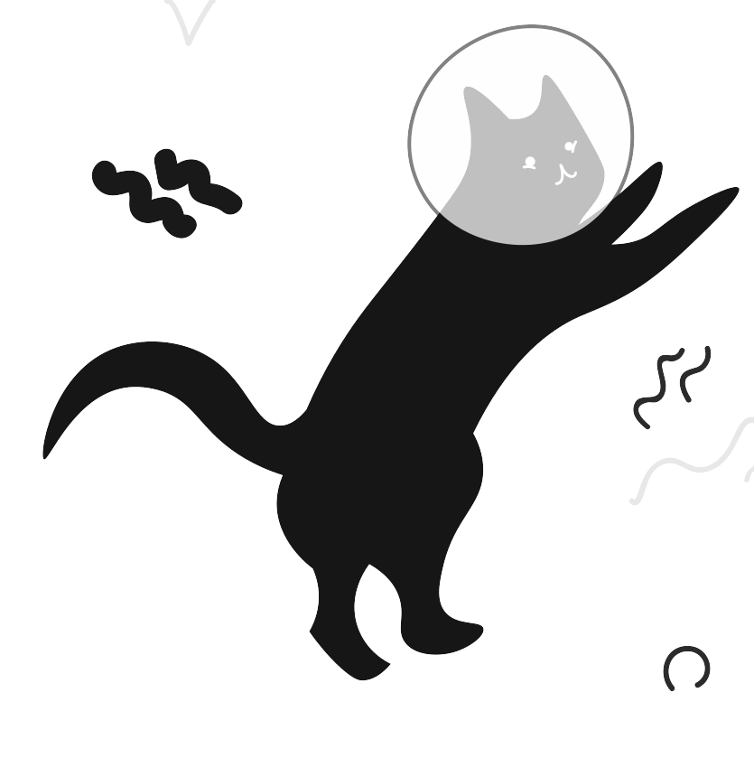

"우주를 향한 첫 발자국, 고양이의 역사적인 비행"
 우주 탐험과 고양이는 상상 이상의 연결고리를 가진다. 1960년대 초, 소련은 세계 최초로 고양이를 우주에 보내 인간의 우주 비행 가능성을 실험했다. 그 중 ‘리카’는 지구를 떠난 고양이로, 우주에서의 생명체 반응을 연구하는 중요한 역할을 했다. 이 역사적인 순간은 오늘날 우주 탐험의 발전과 고양이의 미스터리한 매력 모두를 함께 떠오르게 한다.